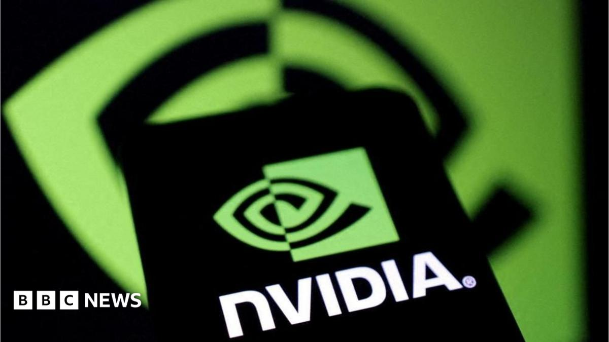

World · 20 Nov 2026
California targets Nvidia in China AI chip probe

The probe by California, where the AI chipmaker has its global headquarters, follows former CEO Jensen Huang's departure.
Multiple independent publishers are reporting on the same development: California targets Nvidia in China AI chip probe.
The available reports place the development in the World category. The accounts were compared for agreement on the central event rather than simply shared names or broad topics.
One of the available reports describes the development this way: The probe by California, where the AI chipmaker has its global headquarters, follows former CEO Jensen Huang's departure.
Readers should consult the linked source reports for additional context, updates and details that may change as the story develops.
Sources
This article was produced by the C. O. Eric AI Newsroom from the cited sources. It is published only after automated evidence and safety checks.